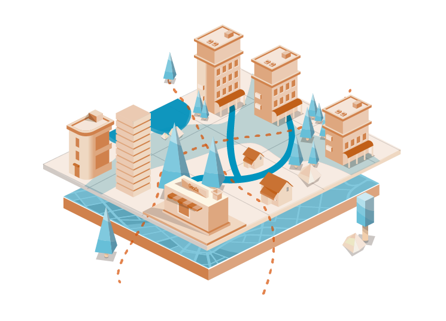
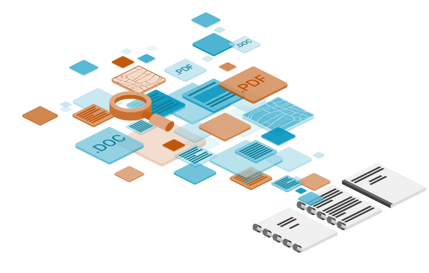

חטיבת הגאו-אינפורמטיקה תומכת במהלכי תכנון עיר ונדל"ן מהמורכבים והמסועפים בישראל. בהתבסס על מסד נתונים עשיר וטכנולוגיית סינתזה מתקדמת, החטיבה פיתחה את תחום הGIS מעבר לעולמות התוכן המסורתיים ליצירת ידע חדש ומעמיק. החטיבה נותנת שירות לגופים וארגונים כחלק מתהליכי קבלת החלטות, חיזוי אסטרטגי ופיתוח עסקי.
קראו עודלכה לעמ עדימ
,מומחים בתחומי גאו-אינפורמטיקה .תשתיות תכנון ונדל"ן, ומחשוב מסמכים
Geodata
מערכת המידע הגאוגרפי והעירוני הנגישה והמקיפה בישראל. מספקת בינה מבוססת מיקום לארגונים, יזמים ועסקים קטנים.
מעבר לשירות
חטיבת גא
חטיבת גאו-אינפורמטיקה
ניהול וליווי תהליכי תכנון משולבים ומורכבים בהתבסס על עשרות שנות ניסיון. כוחה של Geoda בתחום זה נשען על שיתוף הפעולה עם חטיבת הגאו-אינפורמטיקה להפקת ניתוחים מורכבים ותובנות תכנוניות בעלות ערך אסטרטגי.
קראו עוד


חטיבת מחשוב מסמכים
החטיבה מלווה ארגונים במעבר לעידן המידע הממוחשב על ידי אפיון צורכיהם, ניהול תהליך מחשוב המסמכים ואינטגרציה של מערכות מותאמות לקוח לתהליכי ארגון הקיימים. תהליך הדיגיטציה מאשר לא רק שימור המידע, אלא בעיקר ייעול והנגשת מידע בתהליכי עבודה חוצי ארגון.
קראו עוד